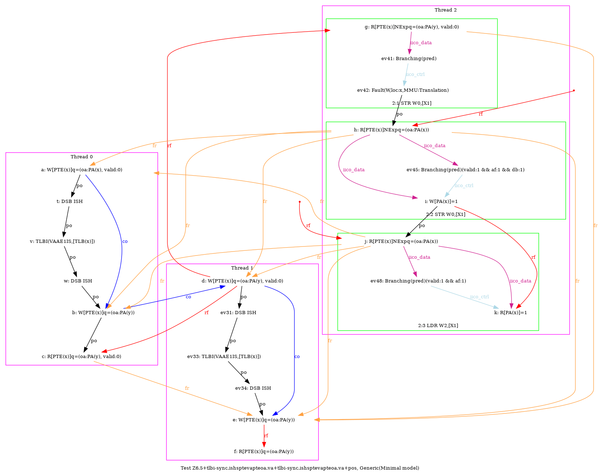
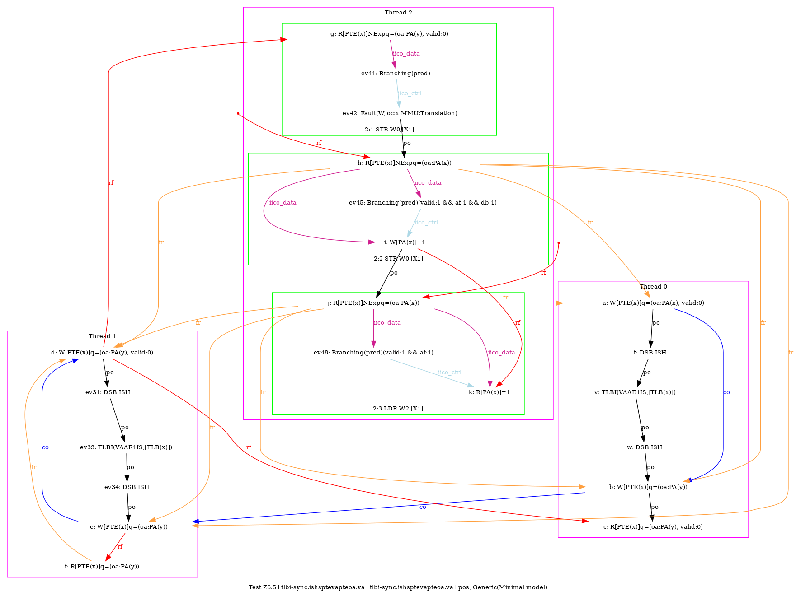
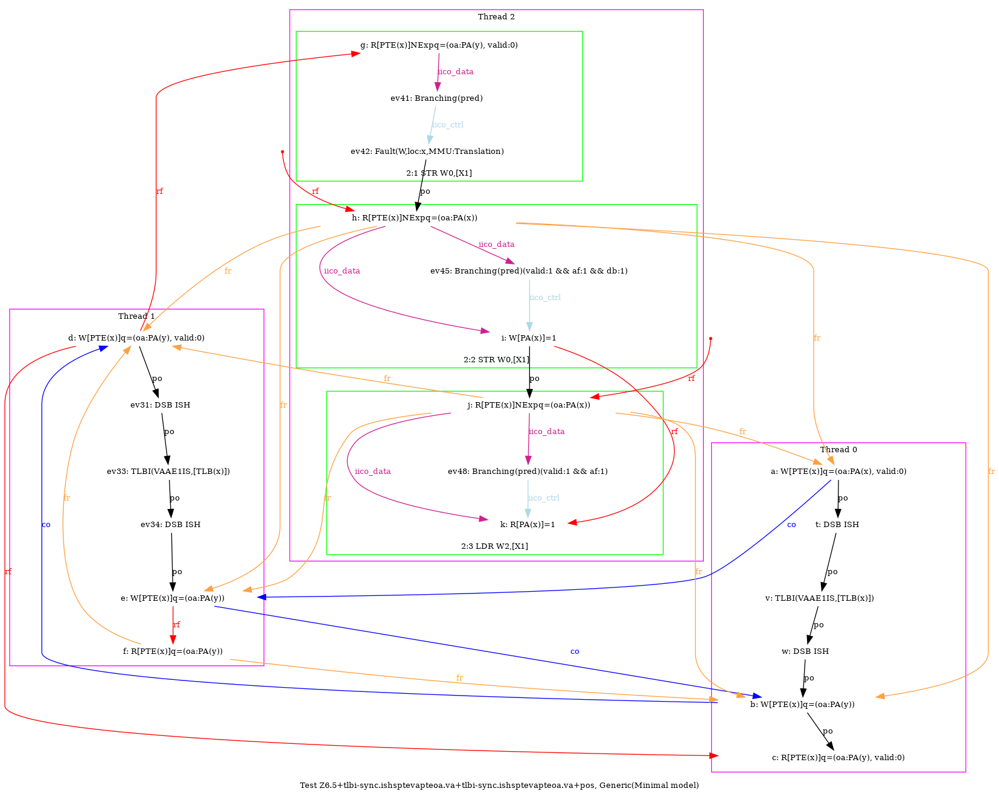
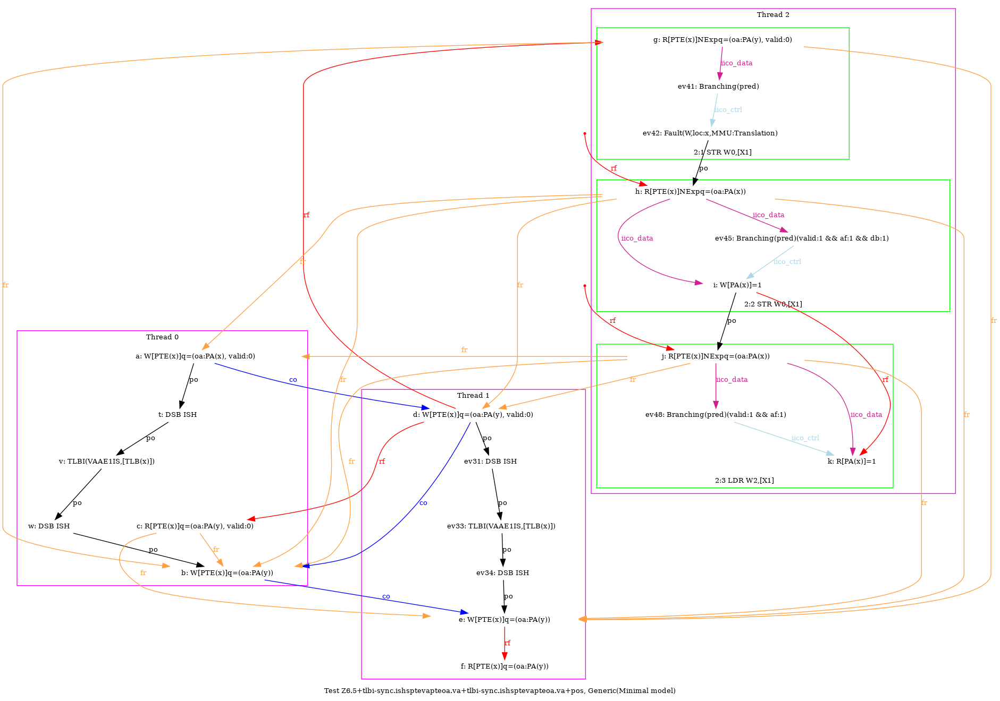

   …
AArch64 Z6.5+tlbi-sync.ishsptevapteoa.va+tlbi-sync.ishsptevapteoa.va+pos
"TLBI-sync.ISHsWWPteVAPteOA.VA CoePteOA.VAPteVA TLBI-sync.ISHsWWPteVAPteOA.VA CoePteOA.VAP PosWR FrePPteVA"
Variant=imprecise
Cycle=PosWR FrePPteVA TLBI-sync.ISHsWWPteVAPteOA.VA CoePteOA.VAPteVA TLBI-sync.ISHsWWPteVAPteOA.VA CoePteOA.VAP
Relax=[PteVA,TLBI-sync.ISHsWW,PteOA,PteVA]
Safe=Fre Coe PosWR
Generator=diy7 (version 7.56+02~dev)
Com=Co Co Fr
Orig=TLBI-sync.ISHsWWPteVAPteOA.VA CoePteOA.VAPteVA TLBI-sync.ISHsWWPteVAPteOA.VA CoePteOA.VAP PosWR FrePPteVA
{
pteval_t 1:X5; pteval_t 0:X5;
int x=0; int y=4;
0:X0=PTE(x); 0:X1=(oa:PA(x), valid:0); 0:X2=(oa:PA(y)); 0:X3=x;
1:X0=PTE(x); 1:X1=(oa:PA(y), valid:0); 1:X2=(oa:PA(y)); 1:X3=x;
2:X1=x;
}
P0 | P1 | P2 ;
STR X1,[X0] | STR X1,[X0] | MOV W0,#1 ;
LSR X4,X3,#12 | LSR X4,X3,#12 | STR W0,[X1] ;
DSB ISH | DSB ISH | LDR W2,[X1] ;
TLBI VAAE1IS,X4 | TLBI VAAE1IS,X4 | ;
DSB ISH | DSB ISH | ;
STR X2,[X0] | STR X2,[X0] | ;
LDR X5,[X0] | LDR X5,[X0] | ;
exists (0:X5=(oa:PA(y), valid:0) /\ 1:X5=(oa:PA(y)) /\ 2:X2=1 /\ fault(P2,x,MMU:Translation))